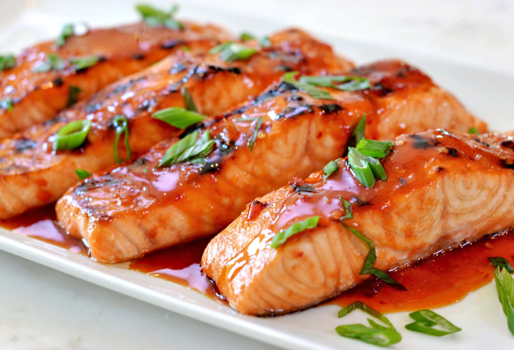

3-Ingredient Chili-glazed Salmon

A delicious dinner for three!
Ingredients
- 4 oz salmon, 3 fillets
- 1/2 cup chili sauce
- 1/4 cup fresh scallions, chopped
Steps
- Preheat oven to 400F (200C)
- In a bowl, mix together the salmon, chili sauce, and the scallions.
- Place the fillets on a baking tray lined with parchment paper. Spoon any leftover sauce on top of the salmon.
- Bake for 12-15 minutes, until the salmon is cooked but still tender.
- Enjoy!
Recipe by Alvin Zhou from Tasty
Return home